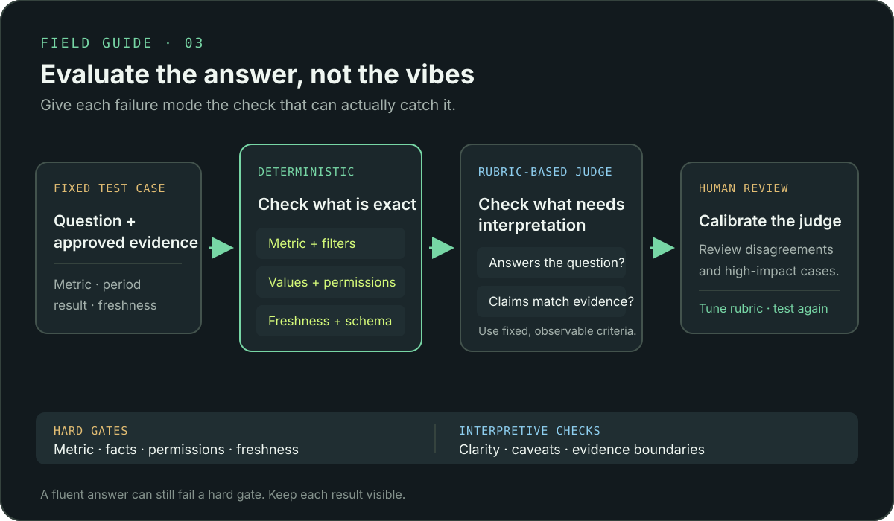

At the Sail & Sky Museum, a visitor-experience lead asks: “Which gallery kept visitors longest in October, and why?”
The agent reports that Moon Garden had a median dwell time of 18.4 minutes, compared with 12.1 minutes in Dino Lab. The numbers are right. Then it adds that the new lighting “caused visitors to stay longer.” The visitor data contains no evidence about lighting.
Is that a good answer? A single “looks right” score cannot tell you. The agent got the comparison right and invented the explanation. This article is about evaluating both parts—and knowing when an LLM judge helps, when it does not, and how to check the judge itself.
This is the third article in a practical field guide to trustworthy analytics agents. Field guide 01 covers the metric contract; field guide 02 covers the context supplied to a model call. The museum and data here are illustrative. For the mechanics of a repeatable, deterministic test harness, see How to know if your analytics agent still works.
Start with the question your evaluation should answer
“Is the agent accurate?” is too broad to be a useful test plan. Accuracy could mean the selected metric, the date filter, the query result, the answer’s wording, or whether the agent correctly refuses to make a causal claim.
For the museum question, suppose the approved measure is the median number of minutes between a visitor’s first and last recorded scan in a gallery. The illustrative October result is:
| Gallery | Median dwell | Completed visits |
|---|---|---|
| Moon Garden | 18.4 minutes | 80 |
| Dino Lab | 12.1 minutes | 100 |
A well-supported answer can report the comparison, identify the measure and period, and say that the result does not explain why visitors stayed longer. It should not turn an observed difference into a causal claim.
Write those expectations down before choosing a score. A rubric might ask:
| Dimension | What to check | Best first check |
|---|---|---|
| Metric and filters | Correct measure, gallery, and October window | Exact structured fields |
| Factual support | Values and visit counts match the query result | Deterministic comparison |
| Evidence boundary | No claim about lighting or visitor motivation without evidence | Judge plus targeted cases |
| Communication | Clear comparison, units, and a useful caveat | Human review or calibrated judge |
| Safe behavior | Clarifies an ambiguous period; respects the user’s access | Application checks and tests |
This is not one score. Some failures are hard stops; others are quality signals. Keep them separate so a polished sentence cannot hide a wrong metric.

Evaluate the path, not only the paragraph
An analytics agent is a chain of decisions: resolve the question, select an approved metric, construct a permitted query, inspect current results, then explain them. A final answer can look plausible even if an earlier step was wrong.
Capture a compact record for each evaluation case:
- the user question and expected behavior;
- the metric identifier, filters, time boundaries, and query result;
- the data-freshness state and permission outcome;
- the final answer and any clarification or refusal;
- model, prompt, tool, and metric-contract versions.
Then put exact properties under deterministic checks. Compare metric IDs and query arguments to expected values. Check returned numbers against a fixed fixture or trusted query result, with explicit numeric tolerance where formatting or rounding requires it. Verify that a stale source triggers the intended behavior. Check access control in the application, not by asking a judge whether the response “seems safe.”
For the gallery example, a test can assert that the agent requested the approved dwell-time metric for 1–31 October, and that its final answer includes 18.4 minutes for Moon Garden and 12.1 for Dino Lab. It can separately fail any unsupported cause claim. The exact date boundaries depend on the business timezone and definition; include those assumptions in the test rather than hiding them in prose.
This division matters because a judge is another model call, not an oracle. It may miss arithmetic, share the candidate model’s blind spots, or reward a confident explanation. Use it for criteria that require interpretation—such as whether a caveat is clear—not as the source of truth for facts the system already knows exactly.
Build cases that can catch real mistakes
Start with questions based on how people actually use the agent. Include normal requests, but also the questions most likely to expose ambiguity or an unsupported leap:
- Metric ambiguity: “How long do people stay?” could mean mean or median, visits or unique visitors. The expected behavior may be to ask.
- Time boundaries: Test the museum’s local timezone, a month boundary, and partial data at the beginning or end of the requested period.
- Small or missing samples: If a gallery has too few completed visits, the answer should disclose the limitation or follow the approved suppression rule.
- Unsupported explanation: Ask “Why did dwell time increase?” when the only available evidence is a dwell-time comparison. The agent should distinguish observation from cause.
- Stale or failed source: A query failure or late scan feed should not become a confident answer based on old results.
- Permission boundaries: A user should not see a restricted gallery or visitor segment because the prompt requested it.
Keep the expected behavior and, where possible, the input data with the case. Use stable snapshots for regression tests so a changed source table does not make yesterday’s test produce a different “correct” answer. Add a case when a real failure occurs, then make sure it represents the underlying failure mode rather than only memorizing one exact wording.
Use a judge for the fuzzy part—and calibrate it
When an answer can be correct in several phrasings, substring matching is not enough. A rubric-based LLM judge can assess whether the response answers the question, states its measure and time window, stays within the supplied evidence, and explains an uncertainty.
Keep the judge’s job narrow. Give it the question, the approved definition, the result, the answer, and a short criterion. Ask for structured findings such as pass, fail, or uncertain, plus the criterion that failed. Do not ask for a free-form “quality score” with no anchors; different runs may interpret a vague 1–5 scale differently.
For example:
{
"supported_comparison": "pass",
"states_period_and_measure": "pass",
"unsupported_causal_claim": "fail",
"evidence": "The answer attributes longer visits to lighting, which is not in the supplied result."
}
Treat that shape as an example, not a provider API schema. Validate the output and fail closed if the judge does not return the required fields. The judge’s evidence should point to text or data it actually received.
Now evaluate the evaluator. Have people review a varied sample of outputs and label the same criteria independently of the judge. Compare disagreements, especially false passes on wrong numbers, missing caveats, or unsupported explanations. If a judge is being used as a release gate, measure its false-pass and false-fail behavior on cases your team cares about. Revisit the rubric when metrics, prompts, models, or user expectations change.
LLM judges can be sensitive to answer order, verbosity, and whether a candidate resembles the judge’s own style. A widely cited study documents these and other limitations, while also finding that strong judges can approximate human preferences in its evaluated settings. That is a reason to calibrate for your task, not a guarantee that a judge will agree with your analysts. When comparing two versions, blind their identities, randomize presentation order, and avoid rewarding length for its own sake.
Make the score useful for a release decision
Keep hard requirements as gates: correct metric, valid permissions, no unsupported material claim, and correct data-freshness behavior. Track softer properties—clarity, usefulness, unnecessary detail—as separate scores. Report results by question category as well as overall; an average can hide a regression in the rare questions with the highest impact.
Run the same fixed set before and after a prompt, model, tool, or semantic-definition change. When results vary between runs, repeat the affected cases and inspect the spread instead of treating one favorable sample as proof. Use a held-out set of cases to check whether repeated prompt tuning has simply taught the agent the test questions.
Offline checks do not replace production observation. Sample real, privacy-approved interactions for review, collect explicit corrections where appropriate, and convert recurring failure patterns into new tests. Define who reviews the sample and how sensitive data is handled before capturing prompts or results.
Evaluation products and APIs change. As checked on 16 November 2026, OpenAI says its Evals platform became read-only for existing users on 31 October and is scheduled to shut down on 30 November; its graders documentation also says those workflows are being deprecated. The techniques here are portable; check a provider's current lifecycle and data-handling terms before choosing a product.
Takeaways
- Split the rubric by failure mode. Exact facts, permissions, and freshness deserve deterministic application checks.
- Test the whole path. Metric selection, filters, evidence, and final wording can fail independently.
- Use an LLM judge narrowly. Give it evidence and observable criteria, then compare its decisions with human review.
- Gate on the failures that matter. A strong average score cannot excuse a wrong metric or an unsupported claim.
- Turn incidents into cases. A growing, representative test set makes each change easier to assess.
Sources and version notes
Checked on 16 November 2026. Evaluation platforms, model behavior, and APIs change; verify current documentation before adopting a specific tool.
- OpenAI graders — grader types and evaluation concepts; the hosted Evals platform documentation explains its lifecycle notice.
- Anthropic: Define success criteria and build evaluations — practical evaluation design and criteria.
- Judging LLM-as-a-Judge with MT-Bench and Chatbot Arena — research on judge agreement and limitations including position and verbosity bias.
The useful question is not “Did the judge give it an eight?” It is “Which behavior did we test, what evidence supports the score, and what would make us stop the release?”